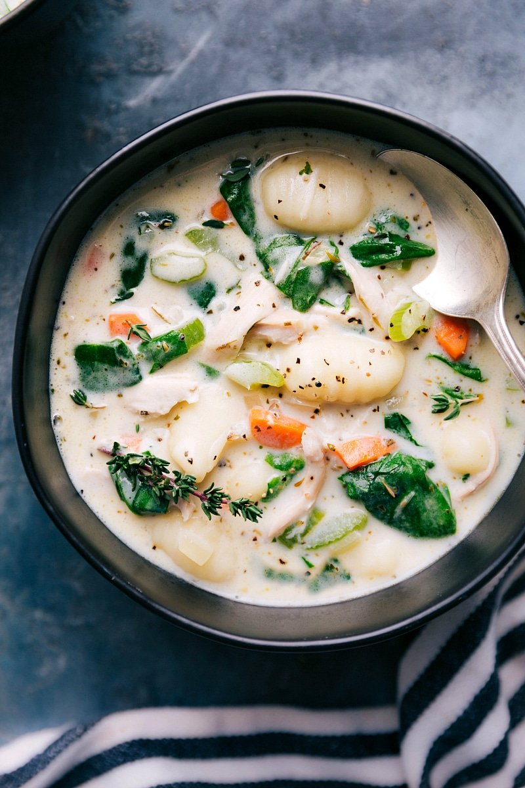

Chicken Gnocchi Soup

Chicken Gnocchi Soup
This creamy Chicken Gnocchi Soup is so easy to make at home and tastes just like the famous soup from Olive Garden. Use fresh or leftover chicken and make it on the Stove Top or the Crock Pot!
Ingredients
- 4 tablespoons butter
- 1 small yellow onion, diced
- 1 stick of celery, diced
- ½ cup carrots, julienned
- 2 garlic cloves, minced
- ¼ cup all-purpose flour
- 2 cups half-and-half
- 4 cups chicken broth
- ½ teaspoon thyme
- ½ teaspoon mustard powder
- 1 lb. boneless skinless chicken breasts, or 2 cups diced cooked chicken
- 16 oz. potato gnocchi, (in the pasta isle)
- 1 cup fresh spinach, roughly chopped
- 1 pinch red pepper flakes, optional
- Salt and pepper, to taste
Steps
- Melt the butter in a large pot over medium heat. Add the diced onions, celery, and carrots and cook until softened, about 5 minutes. Add the garlic and cook for 1 more minute.
- Add the flour and stir to combine. Cook for 2 minutes, until the flour begins to turn a golden color.
- Add the chicken broth and half and half in splashes, stirring to incorporate. Don’t add it too quickly or you will break the roux.
- Add the thyme and mustard powder.
- If using uncooked chicken, add it to the broth. Bring it to a gentle boil. (If you boil too rapidly, the chicken will become tough.) Simmer until the chicken is cooked through, about 10 minutes. (This depends on the thickness of the chicken.
- Remove the chicken and let it rest for 5 minutes, then dice it and add it back to the soup. Let the soup simmer until desired consistency is obtained, it will continue to thicken.
- Add the gnocchi and simmer for about 5 minutes, refer to package instructions for exact amount of time.
- Reduce heat to low and add the spinach, red pepper flakes, and any salt/pepper to taste. Simmer until spinach is wilted, about 1 minute. Serve!